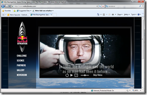
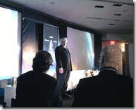

Well, one none-technical article as an exception;)
Since last Friday right after the press-conference in New York and the official announcement during Redbull’s media evening in Kitzbühel, Robert John, Lukas Cudrigh and I are especially proud of
http://www.redbullstratos.com (full site)
http://m.redbullstratos.com (mobile site incl. iPhone support)
Robert started the conversation right after an enterprise briefing organized by the account team with Redbull media house about 6 months ago.
 Together with Lukas Cudrigh, Director for digital marketing and online media initiatives in Redmond, Robert started the discussion with Redbull Mediahouse on the stratos web presence using Silverlight, IIS 7.0 smooth streaming and ASP.NET ... and a number of other digital media ideas.
The Stratos web site is hopefully just the first visible step of a number of great and innovative projects.
Although I was just a little technical help to make this project real (did some prototyping with Silverlight and also Bing maps etc. but the real implementation of the whole web presence is and was done by Terralever together with Microsoft corp. and Lukas’ team), I think  together (and especially Robert who sat in lots of nightly conference calls with Lukas to finalize the contracts and all related things in time) we can be very proud of this. It’s so great working with a company like Redbull who is really strong in “just doing cool things” (what is very untypical for Austria;)).
{kind=link}
I hope you’ll see some of the other things we’ve started, very soon...
It’s pretty cool being part of this scientific trip;)